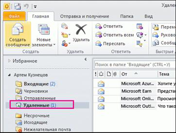
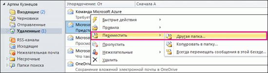
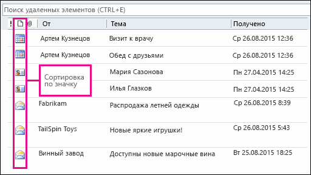
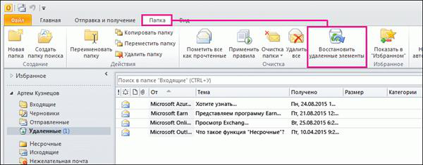
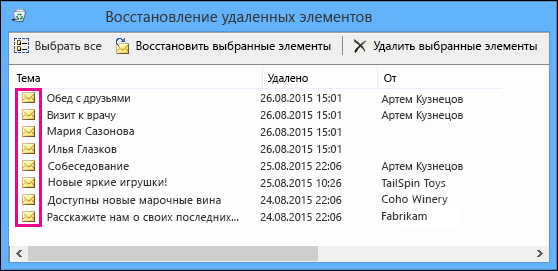

support.office.com
Восстановление удаленных элементов в Outlook 2010
Если вы случайно удалили элемент в почтовом ящике Outlook, его зачастую можно быстро и без труда восстановить. В первую очередь удаленный элемент, например сообщение электронной почты, встречу в календаре, контакт или задачу, следует искать в папке "Удаленные" почтового ящика. Если там его нет, поищите в папке "Элементы, подлежащие восстановлению", которую можно открыть с помощью инструмента Восстановление удаленных элементов.
Нужно восстановить удаленную папку с почтой в Outlook? Вы можете восстановить удаленную папку (и все сообщения в ней), если она все еще находится в папке "Удаленные" — вот как это сделать. К сожалению, удаленную безвозвратно папку восстановить нельзя. Но с помощью инструкций, приведенных в этой статье, можно восстановить сообщения, которые находились в папке при ее безвозвратном удалении, из папки "Элементы, подлежащие восстановлению".
Восстановление удаленных сообщений электронной почты, контактов, встреч и задач из календаря в Outlook
Восстановление элемента, который все еще находится в папке "Удаленные"
Восстановление элемента, которого уже нет в папке "Удаленные"
Восстановление элемента, который все еще находится в папке "Удаленные"
При удалении сообщений электронной почты, контактов, встреч из календаря или задач они перемещаются в папку "Удаленные" почтового ящика. Именно здесь следует в первую очередь искать удаленный элемент. Если элемент там, восстановить его можно так:
- В Outlook перейдите к списку папок электронной почты и выберите Удаленные.

- Найдя сообщение, щелкните его правой кнопкой мыши и выберите пункт Переместить > Другая папка.

- Чтобы переместить сообщение в папку "Входящие", выберите Входящие, а затем нажмите кнопку ОК.

- Чтобы восстановить элементы других типов, выполните одно из указанных ниже действий.
- Чтобы восстановить элемент календаря, щелкните его правой кнопкой мыши, а затем выберите пункт Переместить > Другая папка > Календарь.
- Чтобы восстановить контакт, щелкните его правой кнопкой мыши, а затем выберите пункты Переместить > Другая папка > Контакты. Подробнее о восстановлении контактов: Восстановление удаленного контакта в Outlook.
- Чтобы восстановить задачу, щелкните ее правой кнопкой мыши, а затем выберите пункт Переместить > Другая папка > Задачи.

К началу страницы
Советы по восстановлению элементов из папки "Удаленные"
- При удалении папки она перемещается в папку "Удаленные", где отображается как вложенная папка. Чтобы восстановить удаленную папку (и все содержащиеся в ней элементы), щелкните ее правой кнопкой мыши, выберите пункт Переместить папку, а затем выберите папку, куда ее нужно переместить.
- Если вам нужно восстановить удаленный контакт в Outlook.com, см. этот раздел.
- Удаляются ли элементы из папки "Удаленные" в Outlook автоматически? В параметрах Outlook есть настройка, при включении которой папка "Удаленные" автоматически очищается при выходе из Outlook. Вот как отключить ее:
- Откройте вкладку Файл.
- Нажмите кнопку Параметры и выберите пункт Дополнительно.
- В разделе Начало и завершение работы с Outlook снимите флажок Очищать папку "Удаленные" при выходе из Outlook.
- Нажмите кнопку ОК, чтобы сохранить изменение.
- Чтобы найти элемент, который нужно восстановить, используйте поле Поиск удаленных элементов (или нажмите клавиши CTRL+E).
- Чтобы найти элементы других типов, например удаленные встречи, контакты или задачи, выполните сортировку по столбцу Значок.

- Используйте инструмент "Расширенный поиск". Подробнее см. в статье Быстрый поиск сообщений.
- Если вы приблизительно знаете дату удаления элемента, добавьте столбец Изменено в представление папки "Удаленные элементы". Для этого выполните указанные ниже действия.
- На вкладке Вид в группе Текущее представление выберите Настройка представления.
- Щелкните Столбцы.
- В раскрывающемся списке Группы столбцов для выбора выберите пункт Поля даты/времени.
- Выберите Изменено и нажмите кнопку Добавить. При необходимости можно изменить порядок отображения столбцов.
- По завершении нажмите кнопку ОК.
После этого можно выполнить сортировку по столбцу Изменено, чтобы сгруппировать элементы, удаленные в определенную дату. Это хороший способ поиска сообщений из удаленной папки, так как у всех них будет одна и та же дата изменения.

- Администратор может настроить политику, в соответствии с которой элементы из папки "Удаленные" удаляются по прошествии определенного числа дней. Так же как и при удалении элемента вручную, элементы, удаленные политикой, перемещаются в папку "Элементы, подлежащие восстановлению". Поэтому если вы не можете найти то, что нужно, в папке "Удаленные", поищите в папке "Элементы, подлежащие восстановлению". В следующем разделе описывается, как это сделать.
К началу страницы
Восстановление элемента, которого уже нет в папке "Удаленные"
Если вы не нашли элемент в папке "Удаленные", поищите его в папке "Элементы, подлежащие восстановлению". Это скрытая папка, в которую перемещаются элементы, если вы выполняете одно из следующих действий:
- удаляете элемент из папки "Удаленные";
- очищаете папку "Удаленные";
- удаляете элемент безвозвратно, выделяя его и нажимая клавиши SHIFT+DELETE.
Посмотрите этот видеоролик или выполните указанные ниже действия, чтобы восстановить элементы из папки "Элементы, подлежащие восстановлению".
Чтобы восстановить элементы из папки "Элементы, подлежащие восстановлению", выполните указанные ниже действия.
- В Outlook откройте вкладку Папка и выберите команду Восстановить удаленные элементы.

Важно : Если команда Восстановить удаленные элементы недоступна или отсутствует, возможны указанные ниже причины.
- Выберите элемент, который хотите восстановить, и нажмите кнопку Восстановить выбранные элементы.

Совет : Из папки "Элементы, подлежащие восстановлению" можно восстанавливать сообщения электронной почты, контакты, элементы календаря и задачи.
Куда помещаются восстановленные элементы? При восстановлении элементов из папки "Элементы, подлежащие восстановлению" они перемещаются в папку "Удаленные". Поэтому вы можете найти восстановленный элемент в ней, а затем переместить его в другую папку. При восстановлении встреч в календаре, контактов и задач они также перемещаются в папку "Удаленные". Отсюда их можно переместить обратно в календарь, список контактов или задач. Чтобы найти восстановленные элементы, просто выполните их поиск в папке "Удаленные".
К началу страницы
Советы по восстановлению элементов из папки "Элементы, подлежащие восстановлению"
- Чтобы вам было проще найти определенный элемент в окне Восстановление удаленных элементов, вы можете щелкнуть заголовок столбца Тема, Удалено или От, чтобы отсортировать элементы по этому столбцу.

Обратите внимание на то, что в столбце Удалено указывается дата, когда элемент был удален безвозвратно (с помощью клавиш SHIFT+DELETE) или удален из папки "Удаленные".
- Выполните сортировку по столбцу Удалено, чтобы найти сообщения из папки, которая была удалена безвозвратно (с помощью клавиш SHIFT+DELETE), так как у всех них будет одинаковая дата.
- Все элементы в папке "Элементы, подлежащие восстановлению", включая контакты, элементы календаря и задачи, имеют одинаковый значок в виде конверта.

- Если в папке "Элементы, подлежащие восстановлению" много элементов, найти нужный может быть непросто. Ниже приведены некоторые советы.
- Если вам нужно найти контакт, выполните сортировку по столбцу Тема и ищите имя человека. Вы также можете выполнить сортировку по столбцу От и обратить внимание на пустые записи, так как у контактов нет поля "От".
- Если вы ищете встречу из календаря или задачу, выполните сортировку по столбцу От и найдите свое имя.
- Чтобы восстановить несколько элементов, щелкните их поочередно, удерживая нажатой клавишу CTRL, а затем нажмите кнопку Восстановить выбранные элементы. Вы также можете восстановить несколько идущих подряд элементов. Для этого установите флажок рядом с первым из них, нажмите и удерживайте клавишу SHIFT, а затем установите флажок рядом с последним элементом. Чтобы восстановить все элементы, щелкните Выделить все, а затем нажмите кнопку Восстановить выбранные элементы.
- Администратор мог задать срок, в течение которого элементы в папке "Элементы с возможностью восстановления" можно восстановить. Например, он мог задать политику, в соответствии с которой элементы удаляются из папки "Удаленные" по прошествии 30 дней, или политику, которая позволяет восстанавливать элементы из папки "Элементы с возможностью восстановления" в течение 14 дней. Даже по прошествии этих 14 дней администратор все еще может восстановить нужные элементы. Если вы не нашли элемент в папке "Элементы с возможностью восстановления", поинтересуйтесь у администратора, может ли он восстановить его. Вы можете предоставить своему администратору ссылку на статью с пошаговыми инструкциями: Восстановление элементов, удаленных из почтового ящика пользователя: справка для администраторов.
К сожалению, если вы и ваш администратор не можете найти элемент в папке "Элементы, подлежащие восстановлению", вероятно, он удален из вашего почтового ящика безвозвратно и восстановить его нельзя.
К началу страницы